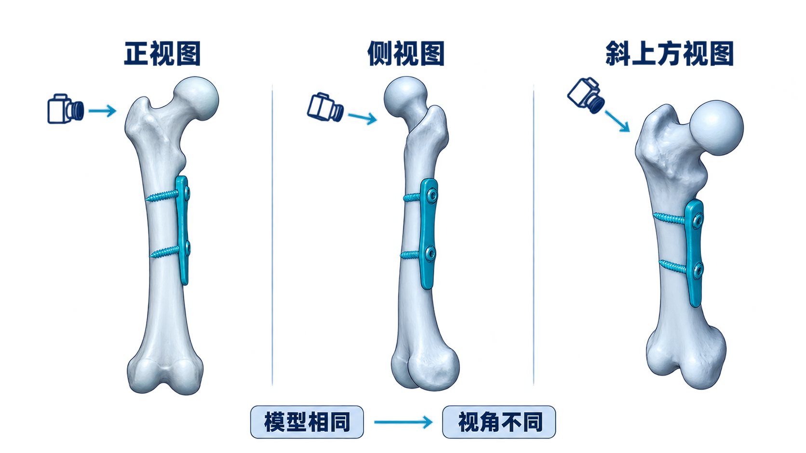
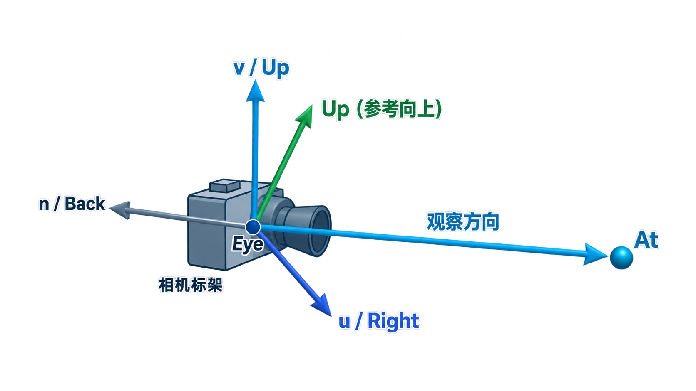
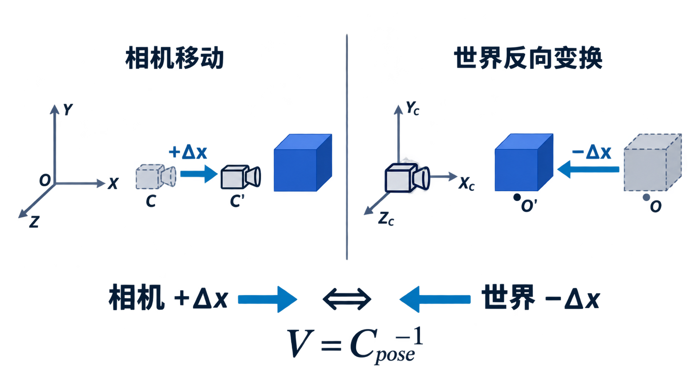

从模型坐标到相机坐标：谁在移动？我们从哪里看？
同一个已重建的骨骼与植入物三维模型，能否在不改变模型数据的情况下，从正面、侧面和斜上方观察？

保持相机观察方向不变，世界里的立方体和器械都固定不动。
改变对象在世界中的位置、方向或大小，回答“对象放在哪里”。
将世界中的点表达为相机坐标，回答“相机怎样观察”。
一个位置、一个目标点、一条参考向上方向——让程序知道相机在哪里、看向哪里、怎样保持正立。
相机位置，几何类型是点。
决定视线方向，几何类型是点。
确定相机滚转参考，几何类型是向量。

f = normalize(at − eye)
指向目标，朝向相机局部负Z方向。
n = normalize(eye − at)
指向相机后方，对应局部正Z轴。
参考Up并不要求与视线严格垂直；程序会构造真正的上向轴v。
如果Up和视线平行或近乎平行，叉积长度为零或过小，无法稳定地构造相机标架。
如何从对象坐标得到世界坐标：p_world = M · p_model。
如何从世界坐标得到相机坐标：p_eye = V · p_world。
相机位姿说明“相机在世界中的位置”，但渲染需要“世界中的点相对于相机在哪里”。

相机位于(0,0,5)，观察方向为负Z；世界中的点P=(1,0,0)。
相机自身绕某个轴旋转，物体没有旋转，却会在相机画面中改变方位。
由旋转R和平移T构成，用来描述相机在哪里、朝向哪里。
需要逆向使用旋转和平移，使相机成为新标架的原点与基准轴。
改变相机参数，模型几何数据保持不可变。实时探究 Eye、At、Up 如何构造相机标架，以及观察矩阵为何是位姿矩阵的逆。
世界中相同的顶点，在相机坐标中的分量会随着观察矩阵改变。
改变Eye、At、Up时不需要重新生成模型顶点，只需改变观察状态并重新渲染。
const viewMatrix = mat4.create();
const eye = [3, 2, 6];
const at = [0, 0, 0];
const up = [0, 1, 0];
mat4.lookAt(viewMatrix, eye, at, up);这段代码创建的是世界坐标到相机坐标的观察矩阵，不是相机对象的模型矩阵。
vec4 worldPosition = uModelMatrix * aPosition;
vec4 cameraPosition = uViewMatrix * worldPosition;
// 下一课：gl_Position = uProjectionMatrix * cameraPosition;“lookAt返回相机在世界中的位姿矩阵，因此可直接作为相机的Model Matrix使用。”
模型顶点数组、拓扑和Vertex Buffer。
View Matrix及对应的uniform；然后重新绘制。
课堂结束：请学生指出Model Matrix与View Matrix各自回答什么问题。